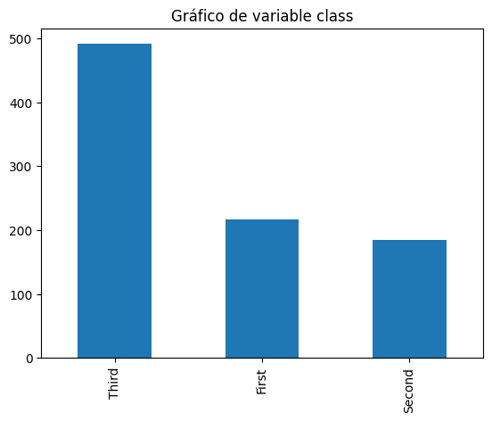

import pandas as pd
import seaborn as sns
import matplotlib.pyplot as plt
from sklearn import set_config
set_config(transform_output="pandas")
df = sns.load_dataset("titanic")
df.dtypes.value_counts().plot(kind="bar")
plt.tight_layout()Preprocesamiento
X = df[["sex", "age", "class", "embark_town", "fare"]]
y = df.alive
y0 no
1 yes
2 yes
3 yes
4 no
...
886 no
887 yes
888 no
889 yes
890 no
Name: alive, Length: 891, dtype: objecty.value_counts(normalize=True).plot(kind="bar")import numpy as np
num_vars = X.select_dtypes(np.number).columns.tolist()
cat_vars = [col for col in X.columns if col not in num_vars]
cat_vars['sex', 'class', 'embark_town']X[num_vars].hist(figsize=(20, 6))array([[<Axes: title={'center': 'age'}>,
<Axes: title={'center': 'fare'}>]], dtype=object)X.groupby("age").fare.mean()age
0.42 8.5167
0.67 14.5000
0.75 19.2583
0.83 23.8750
0.92 151.5500
...
70.00 40.7500
70.50 7.7500
71.00 42.0792
74.00 7.7750
80.00 30.0000
Name: fare, Length: 88, dtype: float64df["rango_edad"] = pd.cut(X["age"], 5)
df.groupby("rango_edad").fare.median()rango_edad
(0.34, 16.336] 26.00000
(16.336, 32.252] 10.50000
(32.252, 48.168] 24.86875
(48.168, 64.084] 29.70000
(64.084, 80.0] 26.55000
Name: fare, dtype: float64df.groupby("rango_edad").fare.mean()rango_edad
(0.34, 16.336] 31.588877
(16.336, 32.252] 28.260499
(32.252, 48.168] 42.788940
(48.168, 64.084] 50.327235
(64.084, 80.0] 28.905691
Name: fare, dtype: float64df.fare.plot(kind="box")for cat in cat_vars:
X[cat].value_counts().plot(
kind="bar", title=f"Gráfico de variable {cat}"
)
plt.show()
X.groupby("class").fare.mean()class
First 84.154687
Second 20.662183
Third 13.675550
Name: fare, dtype: float64Preprocesamiento
X| sex | age | class | embark_town | fare | |
|---|---|---|---|---|---|
| 0 | male | 22.0 | Third | Southampton | 7.2500 |
| 1 | female | 38.0 | First | Cherbourg | 71.2833 |
| 2 | female | 26.0 | Third | Southampton | 7.9250 |
| 3 | female | 35.0 | First | Southampton | 53.1000 |
| 4 | male | 35.0 | Third | Southampton | 8.0500 |
| ... | ... | ... | ... | ... | ... |
| 886 | male | 27.0 | Second | Southampton | 13.0000 |
| 887 | female | 19.0 | First | Southampton | 30.0000 |
| 888 | female | NaN | Third | Southampton | 23.4500 |
| 889 | male | 26.0 | First | Cherbourg | 30.0000 |
| 890 | male | 32.0 | Third | Queenstown | 7.7500 |
891 rows × 5 columns
X.isnull().mean().plot(kind="bar")from feature_engine.encoding import OneHotEncoder, OrdinalEncoder
from feature_engine.imputation import CategoricalImputer, MeanMedianImputer
mmi = MeanMedianImputer(imputation_method="mean")
X_imp = mmi.fit_transform(X)
ci = CategoricalImputer(imputation_method="frequent")
X_imp = ci.fit_transform(X_imp)
X_imp| sex | age | class | embark_town | fare | |
|---|---|---|---|---|---|
| 0 | male | 22.000000 | Third | Southampton | 7.2500 |
| 1 | female | 38.000000 | First | Cherbourg | 71.2833 |
| 2 | female | 26.000000 | Third | Southampton | 7.9250 |
| 3 | female | 35.000000 | First | Southampton | 53.1000 |
| 4 | male | 35.000000 | Third | Southampton | 8.0500 |
| ... | ... | ... | ... | ... | ... |
| 886 | male | 27.000000 | Second | Southampton | 13.0000 |
| 887 | female | 19.000000 | First | Southampton | 30.0000 |
| 888 | female | 29.699118 | Third | Southampton | 23.4500 |
| 889 | male | 26.000000 | First | Cherbourg | 30.0000 |
| 890 | male | 32.000000 | Third | Queenstown | 7.7500 |
891 rows × 5 columns
ohe = OneHotEncoder(variables=["sex", "embark_town"])
X_enc = ohe.fit_transform(X_imp)
od = OrdinalEncoder(encoding_method="arbitrary")
X_enc = od.fit_transform(X_enc)
X_enc| age | class | fare | sex_male | sex_female | embark_town_Southampton | embark_town_Cherbourg | embark_town_Queenstown | |
|---|---|---|---|---|---|---|---|---|
| 0 | 22.000000 | 0 | 7.2500 | 1 | 0 | 1 | 0 | 0 |
| 1 | 38.000000 | 1 | 71.2833 | 0 | 1 | 0 | 1 | 0 |
| 2 | 26.000000 | 0 | 7.9250 | 0 | 1 | 1 | 0 | 0 |
| 3 | 35.000000 | 1 | 53.1000 | 0 | 1 | 1 | 0 | 0 |
| 4 | 35.000000 | 0 | 8.0500 | 1 | 0 | 1 | 0 | 0 |
| ... | ... | ... | ... | ... | ... | ... | ... | ... |
| 886 | 27.000000 | 2 | 13.0000 | 1 | 0 | 1 | 0 | 0 |
| 887 | 19.000000 | 1 | 30.0000 | 0 | 1 | 1 | 0 | 0 |
| 888 | 29.699118 | 0 | 23.4500 | 0 | 1 | 1 | 0 | 0 |
| 889 | 26.000000 | 1 | 30.0000 | 1 | 0 | 0 | 1 | 0 |
| 890 | 32.000000 | 0 | 7.7500 | 1 | 0 | 0 | 0 | 1 |
891 rows × 8 columns
from sklearn.preprocessing import StandardScaler
from feature_engine.wrappers import SklearnTransformerWrapper
sc = SklearnTransformerWrapper(StandardScaler(), variables=["age", "fare"])
X_sc = sc.fit_transform(X_enc)sc_all = StandardScaler()
X_sc_all = sc_all.fit_transform(X_enc)
X_sc_all| age | class | fare | sex_male | sex_female | embark_town_Southampton | embark_town_Cherbourg | embark_town_Queenstown | |
|---|---|---|---|---|---|---|---|---|
| 0 | -0.592481 | -0.820037 | -0.502445 | 0.737695 | -0.737695 | 0.615838 | -0.482043 | -0.307562 |
| 1 | 0.638789 | 0.431081 | 0.786845 | -1.355574 | 1.355574 | -1.623803 | 2.074505 | -0.307562 |
| 2 | -0.284663 | -0.820037 | -0.488854 | -1.355574 | 1.355574 | 0.615838 | -0.482043 | -0.307562 |
| 3 | 0.407926 | 0.431081 | 0.420730 | -1.355574 | 1.355574 | 0.615838 | -0.482043 | -0.307562 |
| 4 | 0.407926 | -0.820037 | -0.486337 | 0.737695 | -0.737695 | 0.615838 | -0.482043 | -0.307562 |
| ... | ... | ... | ... | ... | ... | ... | ... | ... |
| 886 | -0.207709 | 1.682199 | -0.386671 | 0.737695 | -0.737695 | 0.615838 | -0.482043 | -0.307562 |
| 887 | -0.823344 | 0.431081 | -0.044381 | -1.355574 | 1.355574 | 0.615838 | -0.482043 | -0.307562 |
| 888 | 0.000000 | -0.820037 | -0.176263 | -1.355574 | 1.355574 | 0.615838 | -0.482043 | -0.307562 |
| 889 | -0.284663 | 0.431081 | -0.044381 | 0.737695 | -0.737695 | -1.623803 | 2.074505 | -0.307562 |
| 890 | 0.177063 | -0.820037 | -0.492378 | 0.737695 | -0.737695 | -1.623803 | -0.482043 | 3.251373 |
891 rows × 8 columns
from sklearn.neighbors import KNeighborsClassifier
def knn(X, y, k=3):
knn = KNeighborsClassifier(n_neighbors=k, n_jobs=-1)
knn.fit(X, y)
print(f"Puntaje para k = {k}: {knn.score(X, y)}")
for k in [3, 5, 7, 9, 11, 13, 15]:
knn(X_sc, y, k=k)Puntaje para k = 3: 0.8843995510662177
Puntaje para k = 5: 0.8686868686868687
Puntaje para k = 7: 0.8608305274971941
Puntaje para k = 9: 0.8428731762065096
Puntaje para k = 11: 0.835016835016835
Puntaje para k = 13: 0.8249158249158249
Puntaje para k = 15: 0.819304152637486for k in [3, 5, 7, 9, 11, 13, 15]:
knn(X_sc_all, y, k=k)Puntaje para k = 3: 0.8866442199775533
Puntaje para k = 5: 0.8698092031425365
Puntaje para k = 7: 0.8552188552188552
Puntaje para k = 9: 0.8383838383838383
Puntaje para k = 11: 0.835016835016835
Puntaje para k = 13: 0.8282828282828283
Puntaje para k = 15: 0.8237934904601572for k in [3, 5, 7, 9, 11, 13, 15]:
knn(X_enc, y, k=k)Puntaje para k = 3: 0.8372615039281706
Puntaje para k = 5: 0.8204264870931538
Puntaje para k = 7: 0.7867564534231201
Puntaje para k = 9: 0.7721661054994389
Puntaje para k = 11: 0.7676767676767676
Puntaje para k = 13: 0.7575757575757576
Puntaje para k = 15: 0.7508417508417509X_enc| age | class | fare | sex_male | sex_female | embark_town_Southampton | embark_town_Cherbourg | embark_town_Queenstown | |
|---|---|---|---|---|---|---|---|---|
| 0 | 22.000000 | 0 | 7.2500 | 1 | 0 | 1 | 0 | 0 |
| 1 | 38.000000 | 1 | 71.2833 | 0 | 1 | 0 | 1 | 0 |
| 2 | 26.000000 | 0 | 7.9250 | 0 | 1 | 1 | 0 | 0 |
| 3 | 35.000000 | 1 | 53.1000 | 0 | 1 | 1 | 0 | 0 |
| 4 | 35.000000 | 0 | 8.0500 | 1 | 0 | 1 | 0 | 0 |
| ... | ... | ... | ... | ... | ... | ... | ... | ... |
| 886 | 27.000000 | 2 | 13.0000 | 1 | 0 | 1 | 0 | 0 |
| 887 | 19.000000 | 1 | 30.0000 | 0 | 1 | 1 | 0 | 0 |
| 888 | 29.699118 | 0 | 23.4500 | 0 | 1 | 1 | 0 | 0 |
| 889 | 26.000000 | 1 | 30.0000 | 1 | 0 | 0 | 1 | 0 |
| 890 | 32.000000 | 0 | 7.7500 | 1 | 0 | 0 | 0 | 1 |
891 rows × 8 columns